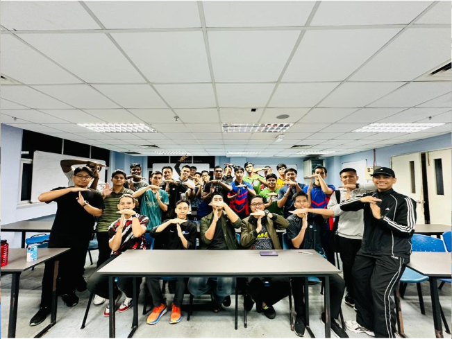

Lensa

3. Mesyuarat MTKT Bil.2/2024 [19 November 2024]
BK03-C-01: Mesyuarat MTKT Bil.2/2024 telah berlangsung yang melibatkan seramai 31 orang ahli mesyuarat. Mesyuarat ini merupakan perjumpaan kali pertama Penasihat MTKT bersama dengan semua ahli MTKT. Perbincangan mengenai aktiviti-aktiviti MTKT turut diadakan dalam kumpulan kecil (mengikut exco masing-masing). Aktiviti-aktiviti yang dicadangkan memfokuskan kepada warga UPNM. Mesyuarat berjalan dengan lancar dan ditangguhkan pada jam 2300.